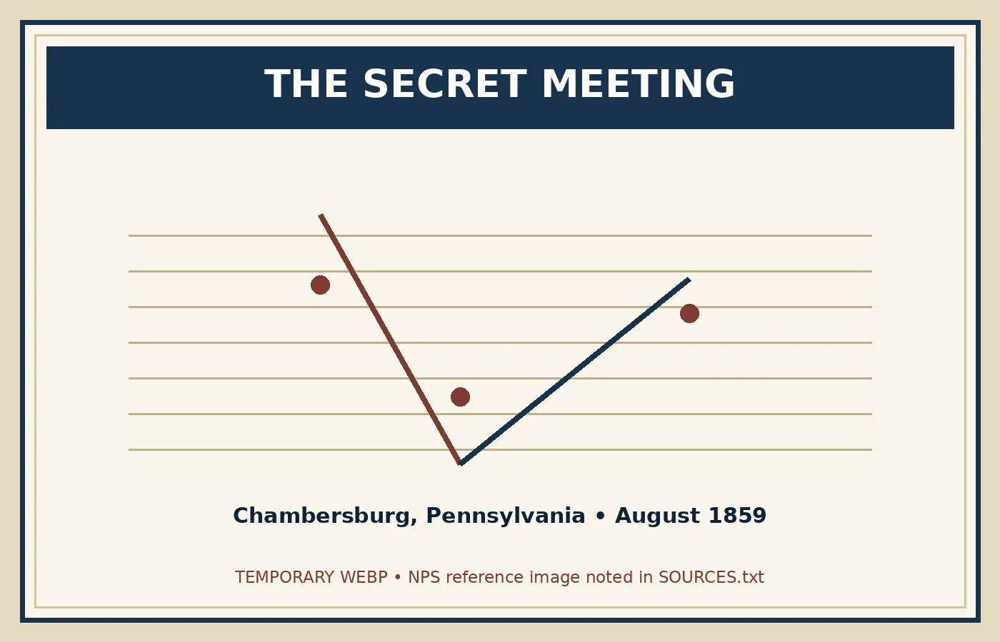

Harriet Tubman
Brown first met Tubman in St. Catharines, Canada, in 1858. Impressed by her courage and experience, he called her “General” Tubman. She helped him with knowledge of antislavery networks and recruiting.
John Brown shared the goal of ending slavery with Harriet Tubman and Frederick Douglass—but agreement about the goal did not always mean agreement about the plan.
 The abolitionist movement included people with very different ideas about how slavery should be destroyed.
The abolitionist movement included people with very different ideas about how slavery should be destroyed.Brown first met Tubman in St. Catharines, Canada, in 1858. Impressed by her courage and experience, he called her “General” Tubman. She helped him with knowledge of antislavery networks and recruiting.
Douglass knew Brown for years and respected his hatred of slavery. Brown visited Douglass in Rochester and discussed plans for armed resistance.
Green was a formerly enslaved man who accompanied Douglass to a secret meeting with Brown in 1859. Unlike Douglass, Green chose to join Brown and later fought at Harpers Ferry.


In August 1859, Brown met Frederick Douglass and Shields Green at an abandoned quarry near Chambersburg, Pennsylvania. Brown explained that he intended to seize the federal armory at Harpers Ferry.
Douglass thought the plan was a trap. Harpers Ferry sat in a narrow river valley and could quickly be surrounded. He urged Brown not to attack.
Brown refused to abandon the plan. Douglass refused to join him. Green reportedly chose to stay with Brown.
You believe slavery must end. Your friend John Brown asks you to join an attack on a federal armory. You believe the location will trap the raiders and that the plan could end in disaster.
Brown's relationships with Tubman and Douglass show why it is misleading to imagine abolitionists as one unified group. Some favored political action. Some emphasized speeches and newspapers. Others worked directly through the Underground Railroad. Brown increasingly believed armed force was necessary.
Years later, Douglass still praised Brown's sacrifice, even though he had rejected the Harpers Ferry plan.

Can two people be equally committed to justice and still disagree completely about the right way to achieve it?